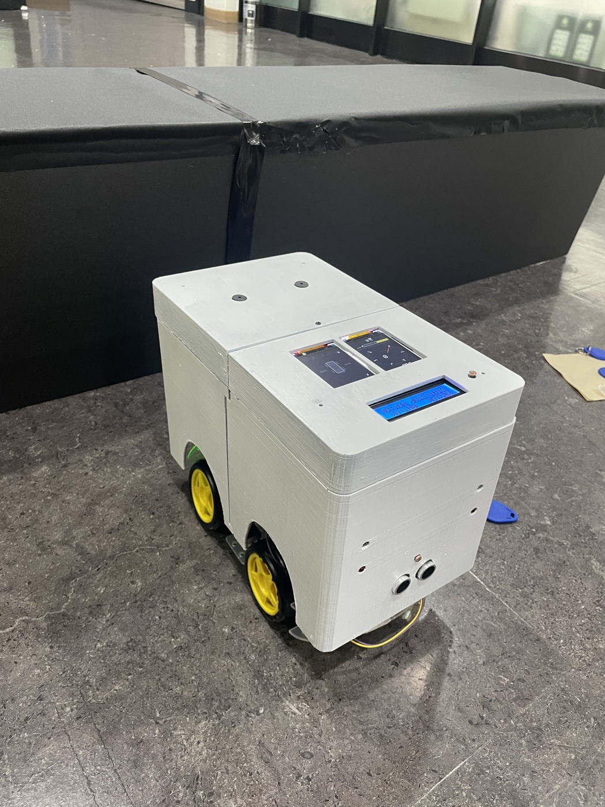

운전자 입력과 무선 명령
RFID 인증, 조이스틱·스위치 입력, Bluetooth 송신
STM32 Node 1에서 센서를 판단하고,
FreeRTOS Task와 Queue를 통해 차량의 표시·경고 노드로 전달했습니다.
Git에는 2026.08까지 수정 기록이 있습니다. 실제 종료·발표일과 개발 일정은 구분합니다.
팀 전체는 운전자 입력으로 RC카를 구동하고 주변 환경을 표시·경고하는 시스템을 구성했습니다.

센서 판단과 CAN 송신을 분리하고, 상태 변화·주행 조건에 맞춰 메시지를 전달하도록 구현·수정했습니다.
STM32F103RBT6 · C · FreeRTOS/CMSIS-RTOS · STM32 HAL · ADC/DMA · 타이머 입력 캡처 · Classic bxCAN. 자동 생성 코드·HAL·RTOS 전체의 직접 작성과 구분합니다.
RFID 인증, 조이스틱·스위치 입력, Bluetooth 송신
무선 명령 처리, 차량 구동, 주행 상태 전달
초음파·온도·조도, Task·Queue, CAN 송수신
수신 상태를 TFT·조명·경고음으로 표현
공통 CAN 버스 · 세 노드가 같은 버스에 연결
Main Node → Node 1 → Node 2 순서의 직렬 물리 배선이 아닙니다. 배선 길이·종단저항·트랜시버 배치는 이 도식에서 표현하지 않습니다.
Main Node의 차량 구동과 Node 2의 출력 구현은 타 파트 담당입니다.
StartTaskHC1 / StartTaskHC2에서 Trig 발생 후 타이머 입력 캡처로 계산한 거리와 완료 플래그를 읽습니다. 1–10cm, 11–20cm, 21–30cm 경고 단계와 CLEAR로 구분하고, 해당 방향 주행 진입 또는 단계 변화 때 Queue에 전달합니다.
Echo 미수신·유효범위 밖 입력도 코드에서는 CLEAR로 처리합니다. 실제 장애물 부재를 검증한 결과가 아닙니다.
StartTaskTP에서 ADC 입력을 온도로 변환합니다. 확인한 고정 원격 버전은 30°C 이상 경고, 25°C 이하 정상 복귀로 판단하고 상태 변경 시 메시지를 구성합니다.
임계값은 코드 설정이며 온도 정확도·시험 성능이 아닙니다.
StartTaskLD에서 전방·상부 조도의 raw·필터값과 변화량을 비교합니다. 전방 급감은 빠른 점등, 두 입력의 어두워짐은 완만한 점등을 요청합니다. 지속 카운터로 짧은 변화를 구분하고 두 입력이 밝게 유지되면 소등을 요청합니다.
상태 변경 시 Queue에 전달합니다. Node 1은 요청 값을 생성하며 실제 조명 출력은 Node 2 담당입니다.
센서 태스크는 xQueueSend(), 송신 태스크는 xQueueReceive(..., portMAX_DELAY)를 사용합니다. Queue의 16개 메시지 용량은 시험 횟수나 처리 성능이 아닙니다.
Queue 수신 후 목적지 ID 유효 범위와 초음파 방향 조건을 확인합니다. payload를 초기화하고 빈 mailbox를 기다린 뒤 HAL_CAN_AddTxMessage()를 호출합니다.
센서 판단 함수에서 CAN을 직접 송신하는 구조가 아닙니다. HAL 호출 성공이 Node 2 수신·출력 완료를 보장하지 않습니다.
Standard 11-bit Data Frame · DLC 8. ID를 논리 목적지로 사용하는 프로젝트 규약이며 CAN 자체의 목적지 강제 기능은 아닙니다.
센서 Task: 방향 주행 진입·거리 단계 변화 판단
TaskCAN: Queue에서 꺼낸 시점에 방향 재확인
실선 화살표는 수신 데이터 흐름입니다. 점선 영역은 저장된 상태를 참조하는 처리 관계이며 CAN 데이터 전달선이 아닙니다.
DRIVE_STATE_FORWARD전방 초음파 메시지 허용
DRIVE_STATE_BACKWARD후방 초음파 메시지 허용
DRIVE_STATE_STOP양쪽 초음파 메시지 제외
수신 콜백은 CAN1·Standard Data Frame·목적지 0x002·최소 2바이트·명령 60을 확인합니다. 정의되지 않은 값은 기존 상태를 유지합니다. 콜백에서 센서 판단·Queue 등록·UART 출력은 하지 않습니다.
Command 번호는 10진수이며 확인한 고정 버전 기준입니다.
팀 통합 문제 기록과 Node 1 송신 코드 변경을 연결하되 최종 해결 완료로 표현하지 않습니다.
발표자료에는 장애물 감지 메시지만 처리하면 경고가 남는 문제가 기록되어 있습니다. 명령·길이·바이트 순서·상태 의미를 맞추고 CLEAR에 따른 해제 처리가 필요한 사례입니다.
Echo 완료 플래그 초기화와 최대 대기 조건을 두고, 미수신·범위 밖 입력은 CLEAR로 처리하도록 수정했습니다. 전후방 명령의 Value=0을 QueueCAN으로 전달하고 송신 직전 방향을 재확인합니다.
경고선·색상·경고음 해제는 Node 2 수신·출력 측 담당 범위입니다. Node 1 코드 수정만으로 실제 출력 해제까지 검증했다고 판단하지 않습니다.
Node 1 담당 기록과 freertos.c·main.c 개인 수정 이력이 대응합니다. 센서 판단·Queue·송신, 주행 상태 수신과 CLEAR 처리 경로를 확인했습니다.
센서 정확도·CAN 지연·전달 성공률·경고 해제 반복 시험과 개인별 배선·실물 시험 수행 범위는 확인 필요입니다. 테스트 문서의 24개 항목은 시나리오이며 24회 시험·합격이 아닙니다.
코드 임계값·대기 시간은 측정 성능이 아닙니다. 이 페이지 제작에서는 빌드·플래시·새 시험을 수행하지 않았습니다. 발표 사례와 수정 커밋의 정확한 작업 순서, 실제 개발·제출 버전은 별도 확인 대상입니다.
아래 소스는 문서에서 확인한 고정 버전입니다. 현재 기본 브랜치나 실제 제출본과 동일하다는 의미는 아닙니다.
개인 변경은 소스 차이를 기준으로 설명합니다. 커밋에 포함된 빌드 산출물이나 타 파트의 구현을 개인 성과로 확대하지 않습니다.